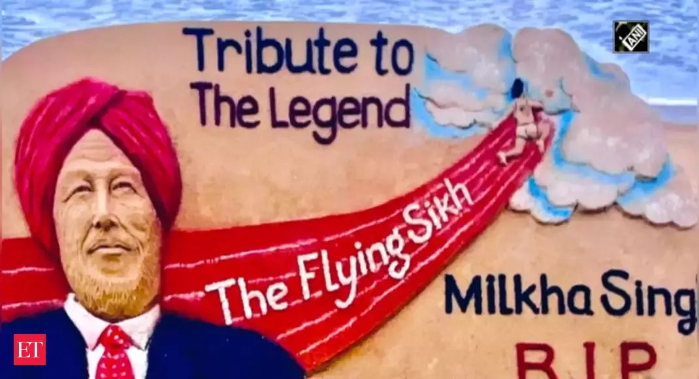

Brands Tribute for Flying Sikh, Milkha Singh Ji !
Our country lost a legendary Indian sprinter, Milkha Singh Ji on 18 JUN 2021 in Chandigarh due to complications caused by Covid19.

Milkha Singh was known as "Flying Sikh" of our nation for his
achievements, dominated the track and field for years and bought a lot
more for nation.
Bhag milkha bhag
song from Bhag milkha bhag.
"FLYING SIKH"
Tribute for Flying Sikh, Milkha Singh Ji. Milkha Singh was known as "Flying Sikh" of our nation for his achievements, dominated the track and field for years and bought a lot more for nation. He was introduced to sport while he was serving the Indian army and was the only athlete to win Gold in the 400m at the Asian as well the Commonwealth Games. Singh's fourth-place time of 45.73 seconds was the Indian national record for almost 40 years.
----Here's a time line of Flying Sikh, Milkha Singh Ji !----
- Milkha Singh was born on 20 November 1929.
- He was born in a Sikh family of Rathore Rajput origin. His birthplace was Govindpura, a village 10 kilometres (6.2 mi) from Muzaffargarh city in Punjab Province, British India (now Muzaffargarh District, Pakistan).
- He was one of 15 siblings, eight of whom died before the Partition of India.
- He was orphaned during the Partition when his parents, a brother and two sisters were killed in the violence that ensued. He witnessed these killings.
- Singh represented India in the 200m and 400m competitions of the 1956 Melbourne Olympic Games
- In 1958, Singh set records for the 200m and 400m in the National Games of India, held at Cuttack, and also won gold medals in the same events at the Asian Games
- He then won a gold medal in the 400m (440 yards at this time) competition at the 1958 British Empire and Commonwealth Games with a time of 46.6 seconds.
- In 2008, he was first described as "the finest athlete India has ever produced" by journalist Rohit Brijnath.
- This latter achievement made him the first gold medalist at the Commonwealth Games from independent India
- Before Vikas Gowda won the gold in 2014, Milkha was the only Indian male to have won an individual athletics gold medal at those Games.
- According to the media reports, the 91-year-old had tested positive for COVID on May 19 but was home isolated after revealing that he was asymptomatic. However, after a few days, the legendary athlete was admitted to the ICU of Mohali's Fortis hospital due to "COVID pneumonia".
RECORDS AND HONOURS
"Awards"
| S.NO | Medal | Event | Category |
|---|---|---|---|
| 1 | Gold | 1958 Asian games | 200m |
| 2 | Gold | 1958 Asian games | 400m |
| 3 | Gold | 1958 Commonwealth Games | 440 yards |
| 4 | Gold | 1958 Asian games | 400m |
| 5 | Gold | 1958 Asian games | 4 * 400m relay |
| 6 | Gold | 1958 Cuttack National Games | 200m |
| 7 | Gold | 1958 Cuttack National Games | 400m |
| 8 | Silver | 1958 Cuttack National Games | 400m |
"Honour"
| S.NO | Honour | Year |
|---|---|---|
| 1 | Padma Shri | 1959 |
Singh was persuaded by Jawaharlal Nehru to set aside his memories of the Partition era to race successfully in 1960 against Abdul Khaliq in Pakistan.
--BRANDS TRIBUTE FOR OUR FLYING SIKH.
For more information go through this link --> No one is like MILKHA.